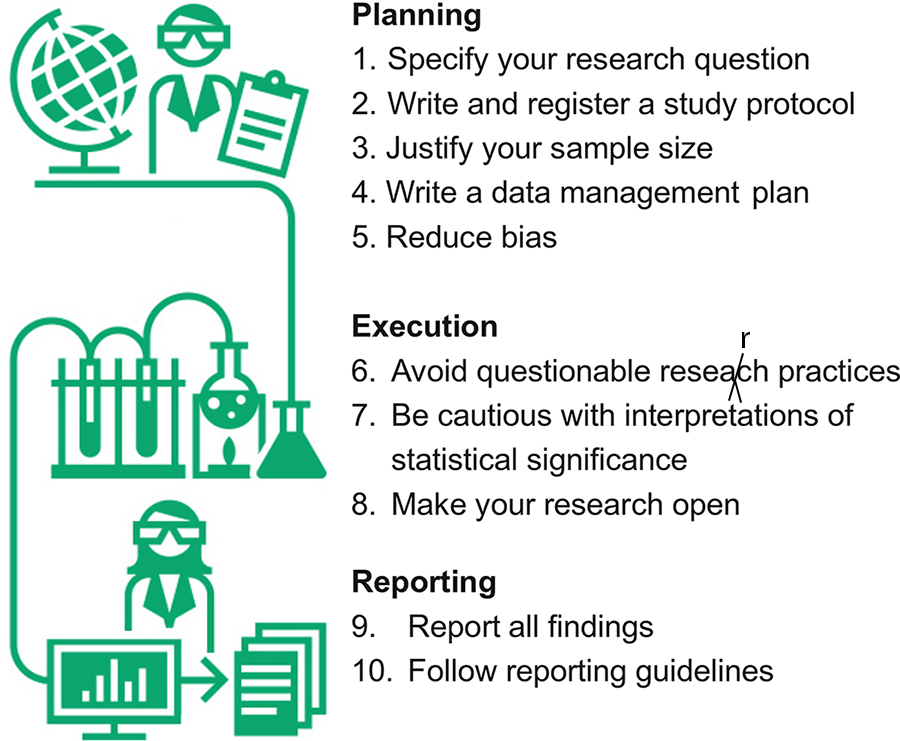

Simple rules for good research practice
Queensland University of Technology
Photo by Bruno Mauricio on Unsplash
Current state of research
Correctable weaknesses in the design, conduct, and analysis of biomedical and public health research studies can produce misleading results and waste valuable resources. Small effects can be difficult to distinguish from bias introduced by study design and analyses. An absence of detailed written protocols and poor documentation of research is common. Information obtained might not be useful or important, and statistical precision or power is often too low or used in a misleading way. Insufficient consideration might be given to both previous and continuing studies. Arbitrary choice of analyses and an overemphasis on random extremes might affect the reported findings. Several problems relate to the research workforce, including failure to involve experienced statisticians and methodologists, failure to train clinical researchers and laboratory scientists in research methods and design, and the involvement of stakeholders with conflicts of interest. Inadequate emphasis is placed on recording of research decisions and on reproducibility of research. Finally, reward systems incentivise quantity more than quality, and novelty more than reliability.
Declaration of Helsinki
- Updated in 2024
“Medical research involving human participants must have a scientifically sound and rigorous design and execution that are likely to produce reliable, valid, and valuable knowledge and avoid research waste. The research must conform to generally accepted scientific principles, be based on a thorough knowledge of the scientific literature, other relevant sources of information, and adequate laboratory and, as appropriate, animal experimentation.”
Declaration of Helsinki
- Updated in 2024
“Medical research involving human participants must have a scientifically sound and rigorous design and execution that are likely to produce reliable, valid, and valuable knowledge and avoid research waste. The research must conform to generally accepted scientific principles, be based on a thorough knowledge of the scientific literature, other relevant sources of information, and adequate laboratory and, as appropriate, animal experimentation.”
“Scientific integrity is essential in the conduct of medical research involving human participants. Involved individuals, teams, and organizations must never engage in research misconduct.”
David Sackett
“There are only a handful of ways to do a study properly but a thousand ways to do it wrong”, David Sackett
COVID-19
Out of 600 models, only 6 were useful for policy
Ten simple rules for good research practice

PICOT
- Study population “P”
- Intervention “I”
- Comparison or control “C”
- Outcome “O”
- Time “T”
PICOT
- Study population “P”
- Intervention “I”
- Comparison or control “C”
- Outcome “O”
- Time “T”
- Qualitative: SPIDER (Sample, Phenomenon of Interest, Design, Evaluation, Research type)